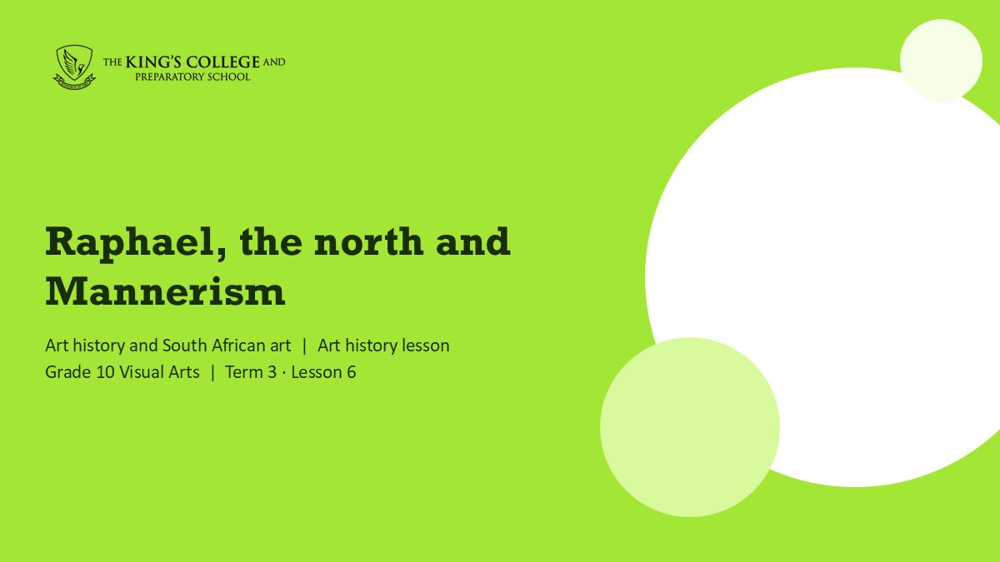

Term 3 · Lesson 6 · Art history lesson
Raphael, the North and Mannerism
Start Here
Today I Will
- Describe how Raphael's School of Athens shows High Renaissance balance
- Name the main northern artists and their contributions
- Spot Mannerist features in a painting by El Greco
Think first
If the greatest artists have already painted the 'perfect' picture, what is left for the next generation to do?
Words to Know
| Word | Meaning |
|---|---|
| Mannerism | The style after the High Renaissance (c. 1520 – c. 1600) that favoured artifice, elongation and complexity. |
| Elongation | Stretching forms beyond natural proportions. |
| School of Athens | Raphael's fresco (1509 – 1511) gathering the great thinkers of ancient Greece in a classical hall. |
| Engraving | A print made from lines cut into a metal plate. |
| Figura serpentinata | A figure twisting in a spiral, like a serpent. |
| Anamorphosis | A distorted image that looks correct only from a particular angle. |
Slides

Notes
Raphael's School of Athens; Dürer, Bosch and Holbein; Mannerism (Pontormo, Bronzino, El Greco) as a break with balance.
Raphael and the North
- Raphael (1483 – 1520): Combined Leonardo's softness and Michelangelo's strength with clarity and grace; known for gentle Madonnas in pyramid compositions.
- The School of Athens: Perfect perspective and balance; Plato and Aristotle stand at the vanishing point. Facing it, the Disputation shows the Church.
- Albrecht Dürer (1471 – 1528): Brought Renaissance ideas north. A master of woodcut and engraving, so his prints spread across Europe.
- Hieronymus Bosch (c. 1450 – 1516): Crowded, strange moral visions such as The Garden of Earthly Delights, warning against sin.
- Hans Holbein the Younger (c. 1497 – 1543): Court painter to Henry VIII. In The Ambassadors (1533) a distorted skull, seen from the side, recalls death.
High Renaissance Versus Mannerism
| High Renaissance | Mannerism |
|---|---|
| Calm balance, often a stable pyramid. | Unsettled compositions that avoid stable balance. |
| Natural, idealised proportions and contrapposto. | Elongated bodies, small heads and twisting figura serpentinata poses. |
| Clear, deep perspective space. | Crowded, shallow or unclear space; figures pressed forward or floating. |
| Natural, harmonious colour. | Cool, acidic or shimmering colours such as pinks, lime greens and pale blues. |
| Natural truth and harmony. | Elegance, artifice and spiritual or emotional intensity. |
Remember
Raphael perfected the rules; the Mannerists stretched them on purpose.
Practical
You need: History booklet, visual journal, image on screen
Spot the Mannerism: El Greco's Burial of the Count of Orgaz
- Heading: El Greco, The Burial of the Count of Orgaz, 1586 – 1588, oil on canvas, Toledo.
- Describe the two halves: what happens in the lower part and in the upper part?
- List at least four Mannerist features you can see, with where each one is.
- Compare the proportions of the figures in the lower half with those in the upper half.
- Interpret: why might El Greco paint heaven so differently from earth?
- Opinion: does the distortion make the painting more or less powerful? Give a reason.
Test Yourself
- Identify who stands at the vanishing point in the School of Athens.
- Explain where the word Mannerism comes from and give two features of the style.
- Compare the upper and lower halves of the Burial of the Count of Orgaz.
Show answers
1. Plato and Aristotle. 2. From maniera, Italian for 'style'; any two of elongation, twisting poses, unclear space, unusual colour, unsettled composition. 3. The lower half is earthly and realistic with portraits of nobles; the upper half is spiritual, with long, weightless, flame-like figures.
Finished Early?
Stretch it Mannerist
Turn a balanced figure into a Mannerist one.
- Draw a standing figure in your VJ with natural proportions.
- Redraw it beside the first with a smaller head, longer limbs and a twisting pose.
- Colour the second with an unusual palette, such as pink, lime and pale blue.
- Label three Mannerist features.